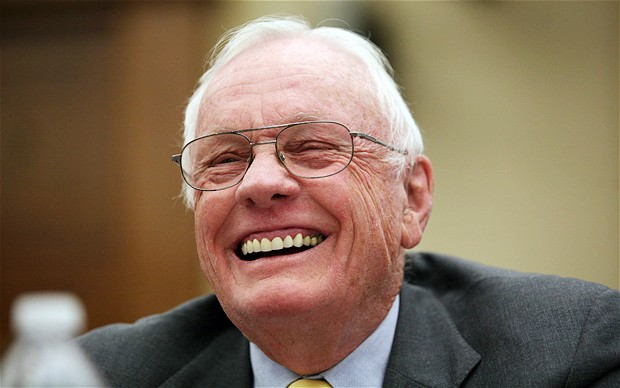

 Neil Armstrong valoraba la curiosidad como motor del progreso humano, promovía la cooperación internacional y defendía la importancia de la ciencia. Reflexionaba sobre la humildad ante la vastedad del universo y veía la exploración como un símbolo del potencial humano.
Neil Armstrong dejó un legado extraordinario con sus contribuciones y logros. Entre los más destacados se encuentran:
◉Primer hombre en caminar sobre la Luna: Comandó la misión Apollo 11 el 20 de julio de 1969, marcando un hito en la exploración espacial.
◉Avances tecnológicos: Su trabajo como piloto de pruebas ayudó al desarrollo de aeronaves experimentales y tecnología espacial.
◉Promoción de la ciencia y la educación: Después de dejar la NASA en 1971, enseñó ingeniería aeroespacial, inspirando a futuras generaciones.
◉Símbolo de exploración: Se convirtió en un ícono mundial de la valentía y la capacidad humana para superar límites.
 Neil Armstrong, más allá de sus logros históricos como astronauta, tuvo bienes materiales modestos a lo largo de su vida. Aunque fue reconocido a nivel mundial, no ostentaba grandes fortunas ni colecciones. Su legado está más asociado con sus contribuciones a la exploración espacial, como ser el primer hombre en caminar sobre la Luna, que con acumulaciones materiales. Armstrong valoraba más el conocimiento, la ciencia y la enseñanza, áreas a las que se dedicó después de su paso por la NASA, inspirando a generaciones futuras. Su vida fue un reflejo de dedicación al progreso humano más que a la acumulación de riqueza.
Neil Armstrong, más allá de sus logros históricos como astronauta, tuvo bienes materiales modestos a lo largo de su vida. Aunque fue reconocido a nivel mundial, no ostentaba grandes fortunas ni colecciones. Su legado está más asociado con sus contribuciones a la exploración espacial, como ser el primer hombre en caminar sobre la Luna, que con acumulaciones materiales. Armstrong valoraba más el conocimiento, la ciencia y la enseñanza, áreas a las que se dedicó después de su paso por la NASA, inspirando a generaciones futuras. Su vida fue un reflejo de dedicación al progreso humano más que a la acumulación de riqueza.